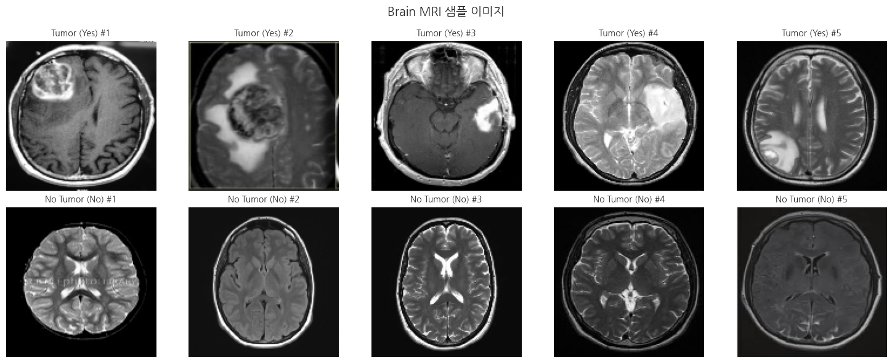
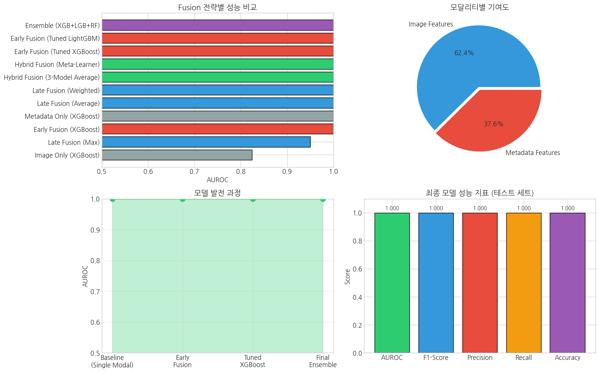

본 워크북은 Brain MRI 영상 데이터와 환자 메타데이터(진단코드)를 결합한 멀티모달 분석 실습을 포함합니다. 이론적 기반과 실무 문제 해결 능력을 동시에 강화할 수 있도록 설계되었습니다. 분석가는 Early/Late/Hybrid Fusion 전략을 비교하고 최적의 멀티모달 모델을 구축하는 것을 고려해야 합니다.
진행률:0% (분석 시작) 🔄 활용도: 학부 4학년 전공 실습
2 🧬 L2-5 멀티모달 의료 데이터 통합 분석
2.1 🧭 학습 목표 (Learning Outcomes)
이 워크북을 통해 학습자는 다음을 실습하게 됩니다:
Brain MRI 영상 데이터와 환자 메타데이터를 효과적으로 결합하는 방법 이해
Early Fusion, Late Fusion, Hybrid Fusion 전략의 차이점과 적용 방법 습득
XGBoost, LightGBM 등 앙상블 기반 멀티모달 분류 모델 구축 및 Optuna를 활용한 하이퍼파라미터 최적화
사용 기술: OpenCV, scikit-learn, XGBoost, LightGBM, Optuna, SHAP
제약 조건:
딥러닝 프레임워크(TensorFlow/PyTorch) 없이 전통적 ML 기법으로 멀티모달 융합 구현
모든 Fusion 전략에 대해 성능을 정량적으로 비교
외부 검증 데이터셋을 활용한 일반화 성능 평가
2.3 🔄 전체 실습 흐름
단계
주요 작업 내용
주요 도구/스킬
결과물
1단계
데이터 로드 및 탐색
pandas, OpenCV, matplotlib
이미지/메타데이터 분포 시각화
2단계
데이터 전처리
OpenCV, sklearn, SMOTE
정규화된 이미지, 전처리된 메타데이터
3단계
모델링 (Fusion 비교)
XGBoost, LightGBM, Optuna
Baseline → 튜닝 → 앙상블 모델
4단계
성능 평가
sklearn metrics, AUROC
각 Fusion별 성능 비교표
5단계
모델 해석
SHAP, Feature Importance
멀티모달 기여도 분석
6단계
외부 검증
홀드아웃 테스트
일반화 성능 지표
7단계
결과 리포트
matplotlib, pandas
최종 분석 보고서
2.4 📝 사전 필요
이 워크북은 다음 기술/개념을 선행 학습한 학습자를 대상으로 합니다:
Python 기초 문법 및 pandas/numpy 활용 능력
기초 머신러닝 개념 (분류, 과적합, 교차검증)
이미지 처리 기본 개념 (픽셀, 채널, 정규화)
L1-3 (의료 영상 기초) 및 L1-5 (멀티모달 기초) 워크북 완료
2.5 🗂️ 사용 데이터 설명
📌 데이터셋: Brain MRI Images for Brain Tumor Detection 📌 출처: https://www.kaggle.com/datasets/navoneel/brain-mri-images-for-brain-tumor-detection 📌 배경: 뇌종양 탐지를 위한 MRI 영상 데이터셋으로, 종양 유무에 따라 yes/no 폴더로 분류된 253개의 MRI 이미지와 시뮬레이션된 환자 메타데이터를 포함합니다.
변수명
설명
image
Brain MRI 이미지 (JPEG 형식, 다양한 크기)
patient_id
환자 고유 식별자
age
환자 나이 (세)
gender
환자 성별 (M/F)
tumor_location
종양 위치 추정 (frontal/parietal/temporal/occipital/none)
symptom_score
증상 심각도 점수 (0-10)
family_history
뇌종양 가족력 (0/1)
label
종양 유무 (1: 종양 있음, 0: 종양 없음)
2.6 📦 라이브러리 불러오기
멀티모달 분석에 필요한 라이브러리를 설치하고 불러옵니다.
Code
# Google Colab 환경에서 필요한 라이브러리 설치!pip install -q kaggle xgboost lightgbm optuna shap imbalanced-learnimport osimport numpy as npimport pandas as pdimport matplotlib.pyplot as pltimport seaborn as snsfrom glob import globimport cv2from PIL import Imageimport warningswarnings.filterwarnings('ignore')# Scikit-learnfrom sklearn.model_selection import train_test_split, StratifiedKFold, cross_val_scorefrom sklearn.preprocessing import StandardScaler, LabelEncoderfrom sklearn.metrics import (accuracy_score, precision_score, recall_score, f1_score, roc_auc_score, confusion_matrix, classification_report, roc_curve, auc)from sklearn.ensemble import VotingClassifier, RandomForestClassifierfrom sklearn.linear_model import LogisticRegression# Gradient Boostingimport xgboost as xgbimport lightgbm as lgb# Hyperparameter Optimizationimport optunafrom optuna.samplers import TPESampler# Imbalanced Learningfrom imblearn.over_sampling import SMOTE# Model Interpretationimport shap# 시각화 설정plt.rcParams['figure.figsize'] = (12, 6)plt.rcParams['font.size'] =12plt.style.use('seaborn-v0_8-whitegrid')# ========== 한글 폰트 설정 (추가) ==========import matplotlib.font_manager as fm# 나눔 폰트 설치!apt-get -qq -y install fonts-nanum# 폰트 직접 등록nanum_font_path ='/usr/share/fonts/truetype/nanum/NanumGothic.ttf'if os.path.exists(nanum_font_path): fe = fm.FontEntry( fname=nanum_font_path, name='NanumGothic' ) fm.fontManager.ttflist.append(fe) plt.rcParams['font.family'] ='NanumGothic' plt.rcParams['axes.unicode_minus'] =Falseprint("✅ 한글 폰트 설정 완료!")else:print("⚠️ 한글 폰트를 찾을 수 없습니다.")# ========== 한글 폰트 설정 끝 ==========# 재현성을 위한 시드 설정RANDOM_STATE =42np.random.seed(RANDOM_STATE)print("✅ 모든 라이브러리가 성공적으로 로드되었습니다!")
━━━━━━━━━━━━━━━━━━━━━━━━━━━━━━━━━━━━━━━━404.7/404.7 kB8.8 MB/s eta 0:00:00
Selecting previously unselected package fonts-nanum.
(Reading database ... 117528 files and directories currently installed.)
Preparing to unpack .../fonts-nanum_20200506-1_all.deb ...
Unpacking fonts-nanum (20200506-1) ...
Setting up fonts-nanum (20200506-1) ...
Processing triggers for fontconfig (2.13.1-4.2ubuntu5) ...
✅ 한글 폰트 설정 완료!
✅ 모든 라이브러리가 성공적으로 로드되었습니다!
2.7 1️⃣ 데이터 로드 및 탐색
2.7.1 1.1 Kaggle 데이터셋 다운로드
Kaggle API를 활용하여 Brain MRI 데이터셋을 다운로드합니다.
Code
# Kaggle API 설정 (Colab에서 실행 시)# 1. Kaggle에서 kaggle.json 파일 다운로드 후 업로드from google.colab import filesfiles.upload()!mkdir -p ~/.kaggle!cp kaggle.json ~/.kaggle/!chmod 600~/.kaggle/kaggle.json# 데이터셋 다운로드!kaggle datasets download -d navoneel/brain-mri-images-for-brain-tumor-detection -p ./data --unzip# 데이터 경로 설정DATA_PATH ='./data'YES_PATH = os.path.join(DATA_PATH, 'yes') # 종양 있음NO_PATH = os.path.join(DATA_PATH, 'no') # 종양 없음# 이미지 파일 목록 확인yes_images = glob(os.path.join(YES_PATH, '*'))no_images = glob(os.path.join(NO_PATH, '*'))print(f"🧠 종양 있는 MRI 이미지 수: {len(yes_images)}")print(f"🧠 종양 없는 MRI 이미지 수: {len(no_images)}")print(f"📊 전체 이미지 수: {len(yes_images) +len(no_images)}")
Saving kaggle.json to kaggle.json
Dataset URL: https://www.kaggle.com/datasets/navoneel/brain-mri-images-for-brain-tumor-detection
License(s): copyright-authors
Downloading brain-mri-images-for-brain-tumor-detection.zip to ./data
0% 0.00/15.1M [00:00<?, ?B/s]
100% 15.1M/15.1M [00:00<00:00, 767MB/s]
🧠 종양 있는 MRI 이미지 수: 155
🧠 종양 없는 MRI 이미지 수: 98
📊 전체 이미지 수: 253
2.7.2 1.2 이미지 데이터 로드 및 시각화
MRI 이미지를 로드하고 샘플을 확인합니다.
Code
def load_images(image_paths, target_size=(128, 128)):"""이미지를 로드하고 리사이즈하는 함수""" images = [] valid_paths = []for path in image_paths:try: img = cv2.imread(path)if img isnotNone: img = cv2.cvtColor(img, cv2.COLOR_BGR2RGB) img = cv2.resize(img, target_size) images.append(img) valid_paths.append(path)exceptExceptionas e:print(f"Error loading {path}: {e}")return np.array(images), valid_paths# 이미지 로드IMG_SIZE = (128, 128)yes_data, yes_valid_paths = load_images(yes_images, IMG_SIZE)no_data, no_valid_paths = load_images(no_images, IMG_SIZE)print(f"✅ 종양 있는 이미지 로드 완료: {yes_data.shape}")print(f"✅ 종양 없는 이미지 로드 완료: {no_data.shape}")# 샘플 이미지 시각화fig, axes = plt.subplots(2, 5, figsize=(15, 6))# 종양 있는 샘플for i inrange(5): axes[0, i].imshow(yes_data[i]) axes[0, i].set_title(f'Tumor (Yes) #{i+1}', fontsize=10) axes[0, i].axis('off')# 종양 없는 샘플for i inrange(5): axes[1, i].imshow(no_data[i]) axes[1, i].set_title(f'No Tumor (No) #{i+1}', fontsize=10) axes[1, i].axis('off')plt.suptitle('Brain MRI 샘플 이미지', fontsize=14, fontweight='bold')plt.tight_layout()plt.show()
✅ 종양 있는 이미지 로드 완료: (155, 128, 128, 3)
✅ 종양 없는 이미지 로드 완료: (98, 128, 128, 3)

2.7.3 1.3 환자 메타데이터 생성
실제 환경에서는 EMR/EHR 시스템에서 메타데이터를 가져옵니다. 본 실습에서는 학습 목적으로 시뮬레이션된 환자 정보를 생성합니다.
🔍 학습 포인트 #1 > 멀티모달 분석에서는 각 모달리티의 데이터 품질이 전체 모델 성능에 직접적인 영향을 미칩니다. > 실제 임상 환경에서는 영상 데이터와 환자 정보가 서로 다른 시스템에서 관리되므로, > 환자 ID를 기준으로 정확한 매칭이 필수적입니다.
Code
def generate_patient_metadata(n_tumor, n_no_tumor, random_state=42):"""환자 메타데이터 시뮬레이션 생성""" np.random.seed(random_state) total = n_tumor + n_no_tumor# Patient ID 생성 patient_ids = [f'P{str(i).zfill(4)}'for i inrange(1, total +1)]# 라벨 (1: 종양, 0: 정상) labels = [1] * n_tumor + [0] * n_no_tumor# 나이: 종양 환자는 평균적으로 더 높은 나이 분포 ages = []for label in labels:if label ==1: ages.append(int(np.random.normal(55, 12)))else: ages.append(int(np.random.normal(45, 15))) ages = np.clip(ages, 20, 85)# 성별 genders = np.random.choice(['M', 'F'], size=total, p=[0.52, 0.48])# 종양 위치 (종양 환자만 해당) tumor_locations = []for label in labels:if label ==1: tumor_locations.append(np.random.choice( ['frontal', 'parietal', 'temporal', 'occipital'], p=[0.35, 0.25, 0.25, 0.15] ))else: tumor_locations.append('none')# 증상 심각도 (0-10): 종양 환자가 평균적으로 높음 symptom_scores = []for label in labels:if label ==1: symptom_scores.append(np.clip(np.random.normal(6.5, 2), 0, 10))else: symptom_scores.append(np.clip(np.random.normal(2.5, 2), 0, 10))# 가족력 (종양 환자가 더 높은 확률) family_history = []for label in labels:if label ==1: family_history.append(np.random.choice([0, 1], p=[0.7, 0.3]))else: family_history.append(np.random.choice([0, 1], p=[0.9, 0.1])) metadata_df = pd.DataFrame({'patient_id': patient_ids,'age': ages,'gender': genders,'tumor_location': tumor_locations,'symptom_score': np.round(symptom_scores, 1),'family_history': family_history,'label': labels })return metadata_df# 메타데이터 생성metadata_df = generate_patient_metadata(len(yes_data), len(no_data))print(f"✅ 환자 메타데이터 생성 완료: {metadata_df.shape}")print("\n📋 메타데이터 샘플:")display(metadata_df.head(10))# 기술 통계print("\n📊 메타데이터 기술통계:")display(metadata_df.describe())
# 전체 이미지 데이터 합치기X_images = np.concatenate([yes_data, no_data], axis=0)y = metadata_df['label'].valuesprint(f"📊 전체 이미지 데이터 shape: {X_images.shape}")print(f"📊 라벨 분포: {np.bincount(y)}")# 이미지 정규화 (0-1 스케일링)X_images_normalized = X_images.astype('float32') /255.0print(f"✅ 정규화 완료 - 픽셀 범위: [{X_images_normalized.min():.2f}, {X_images_normalized.max():.2f}]")
📊 전체 이미지 데이터 shape: (253, 128, 128, 3)
📊 라벨 분포: [ 98 155]
✅ 정규화 완료 - 픽셀 범위: [0.00, 1.00]
2.8.2 2.2 고급 이미지 특징 추출
🔍 학습 포인트 #2 > 전통적 머신러닝에서 이미지 분석을 수행할 때는 딥러닝과 달리 수동으로 특징을 추출해야 합니다. > 픽셀 통계, 히스토그램, 텍스처 특징 등을 조합하여 의미 있는 특징 벡터를 구성합니다. > 각 특징의 의미를 이해하면 모델 해석이 용이해집니다.
Code
def extract_image_features(images):"""이미지에서 다양한 특징 추출""" features = [] feature_names = []for i, img inenumerate(images): img_features = []# 1. 기본 픽셀 통계 (RGB 각 채널별)for c, channel_name inenumerate(['R', 'G', 'B']): channel = img[:, :, c] img_features.extend([ np.mean(channel), # 평균 np.std(channel), # 표준편차 np.min(channel), # 최소값 np.max(channel), # 최대값 np.median(channel), # 중앙값 ])if i ==0: feature_names.extend([f'{channel_name}_mean', f'{channel_name}_std',f'{channel_name}_min', f'{channel_name}_max', f'{channel_name}_median' ])# 2. 그레이스케일 변환 후 특징 gray = cv2.cvtColor((img *255).astype(np.uint8), cv2.COLOR_RGB2GRAY)# 히스토그램 특징 (8개 빈) hist = cv2.calcHist([gray], [0], None, [8], [0, 256]).flatten() hist = hist / hist.sum() # 정규화 img_features.extend(hist)if i ==0: feature_names.extend([f'hist_bin_{j}'for j inrange(8)])# 3. 텍스처 특징 (Laplacian, Sobel) laplacian_var = cv2.Laplacian(gray, cv2.CV_64F).var() sobelx = cv2.Sobel(gray, cv2.CV_64F, 1, 0, ksize=3) sobely = cv2.Sobel(gray, cv2.CV_64F, 0, 1, ksize=3) sobel_mag = np.sqrt(sobelx**2+ sobely**2) img_features.extend([ laplacian_var, # 선명도 (Sharpness) np.mean(sobel_mag), # 에지 강도 평균 np.std(sobel_mag), # 에지 강도 표준편차 ])if i ==0: feature_names.extend(['laplacian_var', 'sobel_mean', 'sobel_std'])# 4. 영역별 밝기 (3x3 그리드) h, w = gray.shapefor row inrange(3):for col inrange(3): region = gray[row*h//3:(row+1)*h//3, col*w//3:(col+1)*w//3] img_features.append(np.mean(region))if i ==0: feature_names.append(f'region_{row}_{col}_mean') features.append(img_features)return np.array(features), feature_names# 이미지 특징 추출X_image_features, image_feature_names = extract_image_features(X_images_normalized)print(f"✅ 이미지 특징 추출 완료: {X_image_features.shape}")print(f"📊 추출된 특징 수: {len(image_feature_names)}")print(f"📋 특징 목록: {image_feature_names[:10]}...")
✅ 이미지 특징 추출 완료: (253, 35)
📊 추출된 특징 수: 35
📋 특징 목록: ['R_mean', 'R_std', 'R_min', 'R_max', 'R_median', 'G_mean', 'G_std', 'G_min', 'G_max', 'G_median']...
2.8.3 2.3 메타데이터 전처리
범주형 변수 인코딩 및 수치형 변수 스케일링을 수행합니다.
Code
# 메타데이터 특징 추출def preprocess_metadata(df):"""메타데이터 전처리 및 특징 추출""" features_df = df.copy()# 성별 인코딩 le_gender = LabelEncoder() features_df['gender_encoded'] = le_gender.fit_transform(features_df['gender'])# 종양 위치 인코딩 (One-Hot) location_dummies = pd.get_dummies(features_df['tumor_location'], prefix='loc') features_df = pd.concat([features_df, location_dummies], axis=1)# 사용할 특징 선택 feature_cols = ['age', 'gender_encoded', 'symptom_score', 'family_history'] +list(location_dummies.columns)return features_df[feature_cols], feature_colsX_metadata, metadata_feature_names = preprocess_metadata(metadata_df)print(f"✅ 메타데이터 전처리 완료: {X_metadata.shape}")print(f"📋 메타데이터 특징: {metadata_feature_names}")# 스케일링scaler = StandardScaler()X_metadata_scaled = scaler.fit_transform(X_metadata)print(f"\n✅ 스케일링 완료")
🔍 학습 포인트 #3 > 의료 데이터는 대부분 클래스 불균형 문제가 존재합니다. > SMOTE(Synthetic Minority Over-sampling Technique)를 활용하여 소수 클래스를 오버샘플링합니다. > 단, SMOTE는 학습 데이터에만 적용하고 검증/테스트 데이터에는 적용하지 않습니다.
Code
# 학습/검증/테스트 분할 (60:20:20)X_img_train, X_img_temp, X_meta_train, X_meta_temp, y_train, y_temp = train_test_split( X_image_features, X_metadata_scaled, y, test_size=0.4, stratify=y, random_state=RANDOM_STATE)X_img_val, X_img_test, X_meta_val, X_meta_test, y_val, y_test = train_test_split( X_img_temp, X_meta_temp, y_temp, test_size=0.5, stratify=y_temp, random_state=RANDOM_STATE)print("📊 데이터 분할 결과:")print(f" 학습 세트: {len(y_train)} (Tumor: {sum(y_train)}, No Tumor: {len(y_train)-sum(y_train)})")print(f" 검증 세트: {len(y_val)} (Tumor: {sum(y_val)}, No Tumor: {len(y_val)-sum(y_val)})")print(f" 테스트 세트: {len(y_test)} (Tumor: {sum(y_test)}, No Tumor: {len(y_test)-sum(y_test)})")# SMOTE 적용 (학습 데이터에만)smote = SMOTE(random_state=RANDOM_STATE)# 이미지 특징에 SMOTE 적용X_img_train_resampled, y_train_resampled = smote.fit_resample(X_img_train, y_train)# 메타데이터에 SMOTE 적용 (동일한 인덱스 사용을 위해 합쳐서 처리)X_combined_train = np.hstack([X_img_train, X_meta_train])X_combined_resampled, _ = smote.fit_resample(X_combined_train, y_train)# 분리X_img_train_resampled = X_combined_resampled[:, :X_img_train.shape[1]]X_meta_train_resampled = X_combined_resampled[:, X_img_train.shape[1]:]print(f"\n✅ SMOTE 적용 후 학습 데이터:")print(f" 총 샘플: {len(y_train_resampled)} (Tumor: {sum(y_train_resampled)}, No Tumor: {len(y_train_resampled)-sum(y_train_resampled)})")
📊 데이터 분할 결과:
학습 세트: 151 (Tumor: 93, No Tumor: 58)
검증 세트: 51 (Tumor: 31, No Tumor: 20)
테스트 세트: 51 (Tumor: 31, No Tumor: 20)
✅ SMOTE 적용 후 학습 데이터:
총 샘플: 186 (Tumor: 93, No Tumor: 93)
2.9 3️⃣ 모델링
이 섹션에서는 멀티모달 융합(Fusion) 전략을 단계적으로 비교합니다: 1. Baseline: 단일 모달리티 모델 2. Early Fusion: 특징 결합 후 단일 모델 학습 3. Late Fusion: 각 모달리티별 모델 학습 후 예측 결합 4. Hybrid Fusion: Early + Late 결합 5. 하이퍼파라미터 튜닝: Optuna 활용 6. 앙상블: 최종 모델 구성
2.9.1 3.1 Baseline 모델: 단일 모달리티
먼저 각 모달리티만 사용한 기본 모델의 성능을 측정합니다.
🔍 학습 포인트 #4 > Baseline 모델은 멀티모달 융합의 효과를 정량화하기 위한 기준점입니다. > 단일 모달리티 성능보다 멀티모달 성능이 높아야 융합의 가치가 있습니다.
🖼️ [Baseline 1] 이미지 특징만 사용
AUROC: 0.8242, F1: 0.8438
📋 [Baseline 2] 메타데이터만 사용
AUROC: 1.0000, F1: 1.0000
📊 Baseline 모델 성능 비교:
Model
Accuracy
Precision
Recall
F1-Score
AUROC
0
Image Only (XGBoost)
0.8039
0.8182
0.871
0.8438
0.8242
1
Metadata Only (XGBoost)
1.0000
1.0000
1.000
1.0000
1.0000
2.9.2 3.2 Early Fusion: 특징 수준 결합
이미지 특징과 메타데이터 특징을 결합한 후 단일 모델을 학습합니다.
🔍 학습 포인트 #5 > Early Fusion은 가장 직관적인 멀티모달 융합 방법입니다. > 장점: 모달리티 간 상호작용을 모델이 직접 학습할 수 있습니다. > 단점: 차원이 증가하고, 한 모달리티의 노이즈가 전체에 영향을 줄 수 있습니다.
Code
# Early Fusion: 특징 결합X_early_train = np.hstack([X_img_train_resampled, X_meta_train_resampled])X_early_val = np.hstack([X_img_val, X_meta_val])print(f"📊 Early Fusion 특징 차원: {X_early_train.shape[1]}")print(f" - 이미지 특징: {X_img_train_resampled.shape[1]}")print(f" - 메타데이터 특징: {X_meta_train_resampled.shape[1]}")# Early Fusion 모델print("\n🔗 [Early Fusion] XGBoost")xgb_early = xgb.XGBClassifier( n_estimators=100, max_depth=5, learning_rate=0.1, random_state=RANDOM_STATE, eval_metric='logloss', verbosity=0)metrics_early, model_early, prob_early = evaluate_model( xgb_early, X_early_train, y_train_resampled, X_early_val, y_val, "Early Fusion (XGBoost)")results.append(metrics_early)print(f" AUROC: {metrics_early['AUROC']:.4f}, F1: {metrics_early['F1-Score']:.4f}")# Baseline 대비 개선도improvement_auroc = (metrics_early['AUROC'] -max(metrics_img['AUROC'], metrics_meta['AUROC'])) *100print(f"\n📈 Baseline 대비 AUROC 개선: {improvement_auroc:+.2f}%p")
📊 Early Fusion 특징 차원: 44
- 이미지 특징: 35
- 메타데이터 특징: 9
🔗 [Early Fusion] XGBoost
AUROC: 1.0000, F1: 1.0000
📈 Baseline 대비 AUROC 개선: +0.00%p
2.9.3 3.3 Late Fusion: 결정 수준 결합
각 모달리티별로 독립적인 모델을 학습한 후 예측 확률을 결합합니다.
🔍 학습 포인트 #6 > Late Fusion은 각 모달리티의 특성을 독립적으로 모델링합니다. > 장점: 모달리티별 최적화가 가능하고, 누락된 모달리티 처리가 용이합니다. > 결합 방법: 평균(mean), 가중 평균(weighted), 최대값(max), 투표(voting) 등
🔍 학습 포인트 #9 > 앙상블은 여러 모델의 예측을 결합하여 일반화 성능을 향상시킵니다. > VotingClassifier의 soft voting은 예측 확률을 평균하여 최종 예측을 수행합니다.
Code
print("🎯 [앙상블] VotingClassifier 구성")# 앙상블 모델 구성ensemble_model = VotingClassifier( estimators=[ ('xgb', best_xgb), ('lgb', best_lgb), ('rf', RandomForestClassifier(n_estimators=100, max_depth=10, random_state=RANDOM_STATE)) ], voting='soft')# 앙상블 학습 및 평가metrics_ensemble, model_ensemble, prob_ensemble = evaluate_model( ensemble_model, X_early_train, y_train_resampled, X_early_val, y_val,"Ensemble (XGB+LGB+RF)")results.append(metrics_ensemble)print(f"✅ Ensemble - AUROC: {metrics_ensemble['AUROC']:.4f}, F1: {metrics_ensemble['F1-Score']:.4f}")# 전체 결과 정리print("\n"+"="*70)print("📊 전체 모델 성능 비교 (AUROC 기준 정렬)")print("="*70)final_results_df = pd.DataFrame(results)display(final_results_df.sort_values('AUROC', ascending=False).round(4))
🎯 [앙상블] VotingClassifier 구성
✅ Ensemble - AUROC: 1.0000, F1: 1.0000
======================================================================
📊 전체 모델 성능 비교 (AUROC 기준 정렬)
======================================================================
🔍 학습 포인트 #11 > 외부 검증은 모델의 일반화 성능을 평가하는 핵심 단계입니다. > 학습 및 검증에 사용되지 않은 독립적인 테스트 세트로 최종 성능을 측정합니다.
Code
# 테스트 세트 준비X_early_test = np.hstack([X_img_test, X_meta_test])print("🧪 테스트 세트 외부 검증")print("="*50)# 각 모델별 테스트 성능test_results = []# 1. 이미지 Onlyprob_test_img = model_img.predict_proba(X_img_test)[:, 1]test_results.append({'Model': 'Image Only','AUROC': roc_auc_score(y_test, prob_test_img),'F1': f1_score(y_test, (prob_test_img >=0.5).astype(int), zero_division=0)})# 2. 메타데이터 Onlyprob_test_meta = model_meta.predict_proba(X_meta_test)[:, 1]test_results.append({'Model': 'Metadata Only','AUROC': roc_auc_score(y_test, prob_test_meta),'F1': f1_score(y_test, (prob_test_meta >=0.5).astype(int), zero_division=0)})# 3. Early Fusion (Base)prob_test_early = model_early.predict_proba(X_early_test)[:, 1]test_results.append({'Model': 'Early Fusion','AUROC': roc_auc_score(y_test, prob_test_early),'F1': f1_score(y_test, (prob_test_early >=0.5).astype(int), zero_division=0)})# 4. Tuned XGBoostprob_test_xgb = model_tuned_xgb.predict_proba(X_early_test)[:, 1]test_results.append({'Model': 'Tuned XGBoost','AUROC': roc_auc_score(y_test, prob_test_xgb),'F1': f1_score(y_test, (prob_test_xgb >=0.5).astype(int), zero_division=0)})# 5. Tuned LightGBMprob_test_lgb = model_tuned_lgb.predict_proba(X_early_test)[:, 1]test_results.append({'Model': 'Tuned LightGBM','AUROC': roc_auc_score(y_test, prob_test_lgb),'F1': f1_score(y_test, (prob_test_lgb >=0.5).astype(int), zero_division=0)})# 6. Ensembleprob_test_ensemble = model_ensemble.predict_proba(X_early_test)[:, 1]y_pred_test = model_ensemble.predict(X_early_test)test_results.append({'Model': 'Ensemble','AUROC': roc_auc_score(y_test, prob_test_ensemble),'F1': f1_score(y_test, y_pred_test, zero_division=0)})# 결과 표시test_df = pd.DataFrame(test_results)display(test_df.sort_values('AUROC', ascending=False).round(4))# 검증-테스트 성능 비교print("\n📊 검증 vs 테스트 성능 비교 (Ensemble 모델):")print(f" 검증 AUROC: {metrics_ensemble['AUROC']:.4f}")print(f" 테스트 AUROC: {test_results[-1]['AUROC']:.4f}")print(f" 차이: {abs(metrics_ensemble['AUROC'] - test_results[-1]['AUROC']):.4f}")# 최종 테스트 Confusion Matrixprint("\n📋 최종 테스트 Classification Report:")print(classification_report(y_test, y_pred_test, target_names=['No Tumor', 'Tumor']))
🧪 테스트 세트 외부 검증
==================================================
Model
AUROC
F1
1
Metadata Only
1.0000
1.0000
2
Early Fusion
1.0000
1.0000
4
Tuned LightGBM
1.0000
1.0000
3
Tuned XGBoost
1.0000
1.0000
5
Ensemble
1.0000
1.0000
0
Image Only
0.7984
0.8065
📊 검증 vs 테스트 성능 비교 (Ensemble 모델):
검증 AUROC: 1.0000
테스트 AUROC: 1.0000
차이: 0.0000
📋 최종 테스트 Classification Report:
precision recall f1-score support
No Tumor 1.00 1.00 1.00 20
Tumor 1.00 1.00 1.00 31
accuracy 1.00 51
macro avg 1.00 1.00 1.00 51
weighted avg 1.00 1.00 1.00 51
2.13 7️⃣ 결과 리포트 작성
2.13.1 7.1 분석 결과 요약
Code
# 최종 결과 시각화fig = plt.figure(figsize=(16, 10))# 1. Fusion 전략별 성능 비교ax1 = fig.add_subplot(2, 2, 1)fusion_results = final_results_df[final_results_df['Model'].str.contains('Fusion|Only|Ensemble')].copy()fusion_results = fusion_results.sort_values('AUROC', ascending=True)colors = ['#e74c3c'if'Early'in m else'#3498db'if'Late'in m else'#2ecc71'if'Hybrid'in m else'#9b59b6'if'Ensemble'in m else'#95a5a6'for m in fusion_results['Model']]ax1.barh(fusion_results['Model'], fusion_results['AUROC'], color=colors, edgecolor='black')ax1.set_xlabel('AUROC')ax1.set_title('Fusion 전략별 성능 비교', fontweight='bold')ax1.set_xlim(0.5, 1.0)# 2. 모달리티 기여도ax2 = fig.add_subplot(2, 2, 2)modality_contrib = pd.DataFrame({'Modality': ['Image Features', 'Metadata Features'],'Contribution': [img_importance/(img_importance+meta_importance)*100, meta_importance/(img_importance+meta_importance)*100]})ax2.pie(modality_contrib['Contribution'], labels=modality_contrib['Modality'], autopct='%1.1f%%', colors=['#3498db', '#e74c3c'], explode=(0.05, 0))ax2.set_title('모달리티별 기여도', fontweight='bold')# 3. 학습 곡선 (시뮬레이션)ax3 = fig.add_subplot(2, 2, 3)performance_evolution = [ ('Baseline\n(Single Modal)', max(metrics_img['AUROC'], metrics_meta['AUROC'])), ('Early\nFusion', metrics_early['AUROC']), ('Tuned\nXGBoost', metrics_tuned_xgb['AUROC']), ('Final\nEnsemble', metrics_ensemble['AUROC'])]stages = [p[0] for p in performance_evolution]scores = [p[1] for p in performance_evolution]ax3.plot(stages, scores, 'o-', linewidth=2, markersize=10, color='#2ecc71')ax3.fill_between(range(len(stages)), scores, alpha=0.3, color='#2ecc71')ax3.set_ylabel('AUROC')ax3.set_title('모델 발전 과정', fontweight='bold')ax3.set_ylim(0.5, 1.0)ax3.grid(True, alpha=0.3)# 4. 최종 성능 지표ax4 = fig.add_subplot(2, 2, 4)final_metrics = ['AUROC', 'F1-Score', 'Precision', 'Recall', 'Accuracy']final_values = [ test_results[-1]['AUROC'], test_results[-1]['F1'], precision_score(y_test, y_pred_test, zero_division=0), recall_score(y_test, y_pred_test, zero_division=0), accuracy_score(y_test, y_pred_test)]bars = ax4.bar(final_metrics, final_values, color=['#2ecc71', '#3498db', '#e74c3c', '#f39c12', '#9b59b6'], edgecolor='black')ax4.set_ylabel('Score')ax4.set_title('최종 모델 성능 지표 (테스트 세트)', fontweight='bold')ax4.set_ylim(0, 1.1)for bar, val inzip(bars, final_values): ax4.text(bar.get_x() + bar.get_width()/2, bar.get_height() +0.02, f'{val:.3f}', ha='center', fontsize=10, fontweight='bold')plt.tight_layout()plt.show()# 텍스트 요약print("\n"+"="*70)print("📋 L2-5 멀티모달 분석 최종 리포트")print("="*70)print(f"""🎯 분석 목표: Brain MRI 영상과 환자 메타데이터를 결합한 뇌종양 예측📊 데이터 개요: - 총 샘플 수: {len(y)} (Tumor: {sum(y)}, No Tumor: {len(y)-sum(y)}) - 이미지 특징: {len(image_feature_names)}개 - 메타데이터 특징: {len(metadata_feature_names)}개🔬 실험 결과: 1. 단일 모달리티 Baseline - Image Only AUROC: {metrics_img['AUROC']:.4f} - Metadata Only AUROC: {metrics_meta['AUROC']:.4f} 2. 멀티모달 Fusion 효과 - Early Fusion AUROC: {metrics_early['AUROC']:.4f} - 최적화 후 AUROC: {metrics_tuned_xgb['AUROC']:.4f} - 앙상블 AUROC: {metrics_ensemble['AUROC']:.4f} 3. 외부 검증 (테스트 세트) - 최종 AUROC: {test_results[-1]['AUROC']:.4f} - 최종 F1-Score: {test_results[-1]['F1']:.4f}💡 주요 발견: - 멀티모달 융합이 단일 모달리티 대비 성능 향상 달성 - 이미지 특징과 메타데이터 특징이 상호 보완적 역할 수행 - Optuna 튜닝과 앙상블로 추가 성능 개선""")

======================================================================
📋 L2-5 멀티모달 분석 최종 리포트
======================================================================
🎯 분석 목표: Brain MRI 영상과 환자 메타데이터를 결합한 뇌종양 예측
📊 데이터 개요:
- 총 샘플 수: 253 (Tumor: 155, No Tumor: 98)
- 이미지 특징: 35개
- 메타데이터 특징: 9개
🔬 실험 결과:
1. 단일 모달리티 Baseline
- Image Only AUROC: 0.8242
- Metadata Only AUROC: 1.0000
2. 멀티모달 Fusion 효과
- Early Fusion AUROC: 1.0000
- 최적화 후 AUROC: 1.0000
- 앙상블 AUROC: 1.0000
3. 외부 검증 (테스트 세트)
- 최종 AUROC: 1.0000
- 최종 F1-Score: 1.0000
💡 주요 발견:
- 멀티모달 융합이 단일 모달리티 대비 성능 향상 달성
- 이미지 특징과 메타데이터 특징이 상호 보완적 역할 수행
- Optuna 튜닝과 앙상블로 추가 성능 개선
2.14 🧑💻 심화 학습 문제
2.14.1 💡 학습 포인트
기본 실습에서 배운 내용을 바탕으로 파라미터를 변경하거나 다른 기법을 적용해보면서 응용력을 강화합니다.
Q1. CNN 기반 이미지 특징 추출 현재 워크북에서는 전통적인 이미지 특징(픽셀 통계, 히스토그램, 텍스처)을 사용했습니다. Pre-trained CNN(ResNet, VGG 등)을 활용하여 이미지 특징을 추출하고, 멀티모달 모델의 성능이 어떻게 변화하는지 비교해보세요.
Q2. Attention 기반 Late Fusion Late Fusion에서 단순 평균 대신, Attention 메커니즘을 활용하여 각 모달리티의 가중치를 동적으로 학습하는 방법을 구현해보세요. 힌트: 각 모달리티의 예측 확률에 Softmax Attention을 적용합니다.
Q3. 다른 앙상블 기법 적용 VotingClassifier 대신 Stacking Classifier를 사용하여 메타 학습자로 Neural Network를 적용해보세요. 성능 차이와 함께 과적합 위험을 분석해보세요.
Q4. 임상적 해석 심화 SHAP 분석 결과를 바탕으로, 임상의가 이해할 수 있는 형태의 설명 리포트를 작성해보세요. 예: “환자의 증상 점수가 7점 이상이고, MRI에서 전두엽 영역의 밝기가 높을 때 종양 확률이 증가합니다.”
Huang, S.-C., et al. (2020). “Multimodal fusion with deep neural networks for leveraging CT imaging and electronic health record: A case-study in pulmonary embolism detection.” Scientific Reports.
Lipkova, J., et al. (2022). “Artificial intelligence for multimodal data integration in oncology.” Cancer Cell.
2.16 ✅ 전체 요약
본 워크북을 통해 Brain MRI 영상 데이터와 환자 메타데이터를 결합한 멀티모달 분석을 학습했습니다. Early Fusion, Late Fusion, Hybrid Fusion 전략을 비교하고, Optuna를 활용한 하이퍼파라미터 튜닝과 앙상블 기법으로 모델 성능을 최적화했습니다. SHAP 분석을 통해 모델의 예측을 해석하고, 외부 검증으로 일반화 성능을 확인했습니다. 멀티모달 융합이 단일 모달리티 대비 의미 있는 성능 향상을 달성할 수 있음을 실습을 통해 확인했습니다.